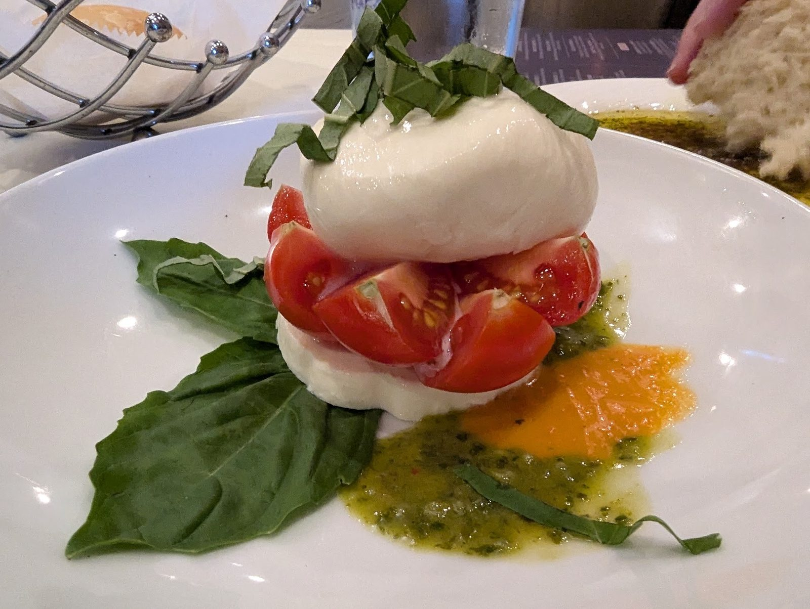

Pasta
Fettuccine in Aldino's famous alfredo sauce with seasonal vegetables. Also lemon white wine sauce and chicken Gorgonzola.
Italian restaurant · San Antonio, TX

Fresh pasta, aged steaks and gulf seafood on North Loop 1604.
What to order
Dishes we cook every day.
Fettuccine in Aldino's famous alfredo sauce with seasonal vegetables. Also lemon white wine sauce and chicken Gorgonzola.

Pizza from the wood-burning oven, from a classic margherita to the flatbread on the happy hour menu.

Aged center cuts of beef grilled to your request, and large gulf shrimp and scallops sautéed in white wine and lemon.


4.7 ★ from 1960 Google reviews
Aldino’s made a great first impression. The service was excellent, the food was delicious, and the atmosphere felt welcoming from the moment I walked in. Parking was plenty available, which is always a plus. What stood out most was the owner personally checking on each table. I felt it was a first‑class touch that shows real pride in your dining experience.
Aldino’s made a great first impression. The service was excellent, the food was delicious, and the atmosphere felt welcoming from the moment I walked in. Parking was plenty available, which is always a plus. What stood out most was the owner personally checking on each table. I felt it was a first‑class touch that shows real pride in your dining experience.
Incredible! You can tell the pasta is made from scratch and doesn’t compare to the processed American pasta you usually see. The sauces were delicious and light. The lemon white wine sauce is perfect. Zesty and citrusy. The chicken Gorgonzola sauce was so delicious I could drink it! I normally can’t do cream sauces because it upsets my stomach, but this sauce didn’t feel like it had any heavy creams.
We had such a wonderful dining experience! From the moment we sat down, our waiter Pablo was absolutely awesome, friendly, attentive, knowledgeable, and made sure everything was perfect throughout our meal. The Chicken Marsala was delicious. You could immediately tell the ingredients were high quality, the chicken was tender, and the rich mushroom Marsala sauce was full of flavor.

Our story
An Italian restaurant in North Central San Antonio, at Blanco. Authentic Italian food for over 30 years.
Sauces made in-house, steaks grilled to order, pizza from a wood-burning oven. An Italian wine list, and a bar for the game.
The owner checks on each table. Quiet dining room, plenty of parking.
Come by
1203 North Loop 1604 W at Blanco, San Antonio, TX 78232
Dine in, take out or order on DoorDash. Private dining is available for celebrations and events.